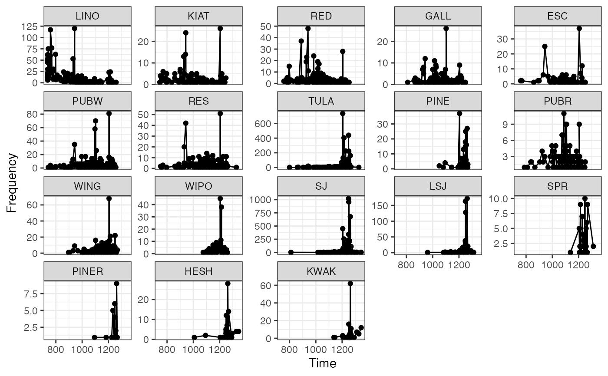

Estimates the Mean Ceramic Date of an assemblage.
date_mcd(object, dates, ...) bootstrap_mcd(object, ...) jackknife_mcd(object, ...) # S4 method for CountMatrix,numeric date_mcd(object, dates) # S4 method for DateMCD bootstrap_mcd(object, probs = c(0.05, 0.95), n = 1000) # S4 method for DateMCD jackknife_mcd(object)
| object | A arkhe::CountMatrix or a DateEvent object. |
|---|---|
| dates | A |
| ... | Currently not used. |
| probs | A |
| n | A non-negative |
date_mcd() returns a DateMCD object.
bootstrap_mcd() and jackknife_mcd() return a data.frame.
The Mean Ceramic Date (MCD) is a point estimate of the occupation of an archaeological site (South 1977). The MCD is estimated as the weighted mean of the date midpoints of the ceramic types (based on absolute dates or the known production interval) found in a given assemblage. The weights are the relative frequencies of the respective types in the assemblage.
A bootstrapping procedure is used to estimate the confidence interval of a given MCD. For each assemblage, a large number of new bootstrap replicates is created, with the same sample size, by resampling the original assemblage with replacement. MCDs are calculated for each replicates and upper and lower boundaries of the confidence interval associated with each MCD are then returned.
South, S. A. (1977). Method and Theory in Historical Archaeology. New York: Academic Press.
Other dating methods:
event
N. Frerebeau
## Mean Ceramic Date ## Coerce the zuni dataset to an abundance (count) matrix data("zuni", package = "folio") counts <- as_count(zuni) ## Set the start and end dates for each ceramic type dates <- list( LINO = c(600, 875), KIAT = c(850, 950), RED = c(900, 1050), GALL = c(1025, 1125), ESC = c(1050, 1150), PUBW = c(1050, 1150), RES = c(1000, 1200), TULA = c(1175, 1300), PINE = c(1275, 1350), PUBR = c(1000, 1200), WING = c(1100, 1200), WIPO = c(1125, 1225), SJ = c(1200, 1300), LSJ = c(1250, 1300), SPR = c(1250, 1300), PINER = c(1275, 1325), HESH = c(1275, 1450), KWAK = c(1275, 1450) ) ## Calculate date midpoints mid <- vapply(X = dates, FUN = mean, FUN.VALUE = numeric(1)) ## Calculate MCD mc_dates <- date_mcd(counts, dates = mid) ## Plot plot_time(mc_dates)
#> min mean max Q5 Q95 #> LZ1105 1125.0000 1161.1458 1209.3750 1130.938 1191.4844 #> LZ1103 1069.5946 1128.0631 1176.6892 1082.111 1173.1757 #> LZ1100 1094.6429 1156.5476 1214.2857 1111.518 1192.8571 #> LZ1099 1081.2500 1089.2708 1096.8750 1082.656 1096.8750 #> LZ1097 982.8125 1088.0729 1175.0000 1005.078 1158.1250 #> LZ1096 737.5000 839.3452 996.4286 737.500 944.6429#> mean bias error #> LZ1105 1162.4206 -1.349206 28.22921 #> LZ1103 1137.4923 -5.874698 68.74235 #> LZ1100 1153.8196 -10.959746 50.11661 #> LZ1099 1090.7242 1.686508 10.14794 #> LZ1097 1091.6749 -8.713624 71.14024 #> LZ1096 849.7024 146.726190 268.67089